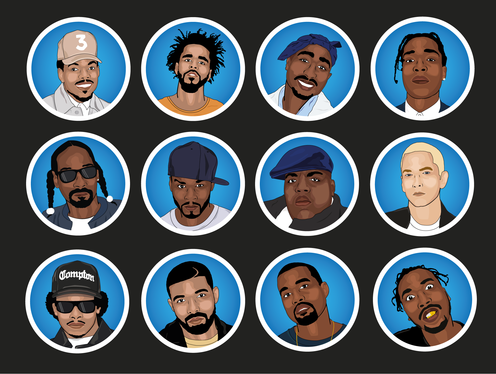

Our task was to create an icon set of twelve saleable icons and build a website to display them.
My idea grew from a love of this music genre and hence, I decided to make an icon set of Hip Hop artists. I plan to display these on a website centered around a Hip Hop Hall of Fame. From researching icon sets, I found that there were very few such sets and certainly none with the illustrations I had in mind. I started on paper, focusing on characteristics that I thought would make the icons/characters instantly recognisable. I decide to go with flat design and from there I added facial detail using layers of shading. I added the said details I had identified, for example hair styles, head gear, gap in teeth and braids. These I felt brought the icons to life.
This is the icon set of twelve Hip Hop artists which have been displayed in a promotional website.
